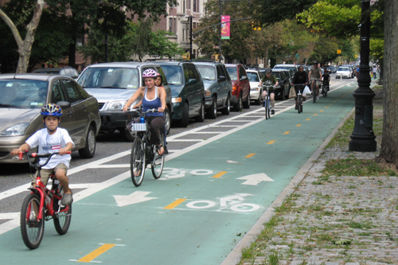
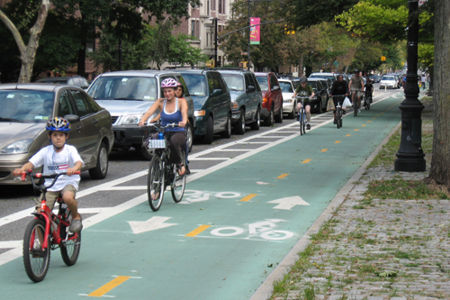

WHAT'S OUR MISSION?
 

What’s one thing this thriving and beautiful city can do to keep families from leaving for the suburbs? Have a strong organization like the Downtown Baltimore Family Alliance there to back it up, cheer for it and continue its grassroots programs.
The DBFA’s mission is to attract, retain and support city families through programs like the:
- annual school fair
- advocating for equitable funding in Annapolis
- partnerships with Live Baltimore.
| Federal Hill | Canton | Midtown |
|---|---|---|
| Yuppies | More Yuppies | The gays! | /
| White | White | White |